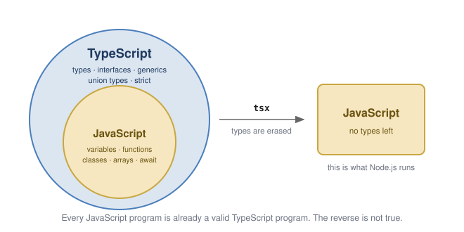

5 Introduction to TypeScript
Ask the AI tutor for this unit. It knows the chapters and exercises of this unit. You can ask in German or English.
You have written JavaScript before, for plain web pages. This chapter is about what TypeScript adds on top of it, and about the handful of rules that decide whether the type system helps you or gets in your way.
5.1 Why TypeScript?
JavaScript is dynamically typed. A variable can hold anything, and a typo in a property name is only discovered when that line of code actually runs — possibly in production.
const user = { name: "Ada", age: 36 };
console.log(user.nmae); // undefined - no error, no warningTypeScript is a superset of JavaScript: every valid JavaScript program is a valid TypeScript program. It adds a type system that is checked before the program runs.
const user: { name: string; age: number } = { name: "Ada", age: 36 };
console.log(user.nmae); // compile error: Property 'nmae' does not exist
Everything you already know about JavaScript still applies. What you add is the description of what the values are — and that description is gone again by the time the program runs.
5.2 The most important sentence of this unit
Types exist at compile time only. At runtime there is nothing left but JavaScript.
TypeScript is transpiled to JavaScript, and during that step all type information is erased. There is no typeof check against your interfaces, no reflection, no casting that verifies anything.
const data = JSON.parse(text) as Article; // compiles fine
console.log(data.price.toFixed(2)); // crashes if the JSON had no priceThis matters enormously as soon as data enters the program from outside — a file, an HTTP request, a database. You have to validate it yourself. We will do this in every exercise of this unit.
5.3 Ten rules of the type system
Keep this table close for the first few weeks. Most of the confusion in this unit comes from one of these ten lines.
| TypeScript | |
|---|---|
| Type compatibility | structural – the shape decides, not the name (“duck typing”) |
| Types at runtime | none – they are erased during transpilation |
| Type inference | works almost everywhere; write types only where they help |
| “no value” | null and undefined – prefer undefined |
| Untyped escape hatch | any (avoid it) and unknown (the safe one) |
| One of several fixed values | a union of literal types: “a” | “b” |
| Operator overloading | does not exist – write compareTo, equals, … |
| Constants in a class | only static readonly |
| Generics at runtime | erased, like all other types |
| What is checked, and when | the compiler checks; the running program is plain JavaScript |
The two lines to remember: structural typing and no types at runtime.
5.4 Basic types
let done: boolean = false;
let count: number = 42; // one numeric type only - no int/long/double
let name: string = "Ada"; // ' and " are equivalent, ` allows interpolation
let nothing: undefined = undefined;
let empty: null = null;Type inference means the annotation is usually unnecessary:
let count = 42; // inferred as number
count = "seven"; // compile errorAnnotate function parameters and return types, and leave local variables to inference.
function toCelsius(fahrenheit: number): number {
return (fahrenheit - 32) / 1.8;
}5.4.1 Template strings
const city = "Linz";
console.log(`It is ${toCelsius(72).toFixed(1)} °C in ${city}`);5.5 any and unknown
any switches the type checker off for that value. It is contagious and almost always the wrong answer:
const data: any = JSON.parse(text);
data.whatever.at.all; // compiles - crashes at runtimeunknown is the safe variant: you may hold the value, but you must narrow it before use.
const data: unknown = JSON.parse(text);
if (typeof data === "object" && data !== null && "name" in data) {
// only here TypeScript lets you access data.name
}5.6 Union types and literal types
When a value may only be one of a few fixed alternatives, TypeScript usually uses a union of string literal types rather than an enum:
type Stage = "main" | "tent" | "club";
let stage: Stage = "main";
stage = "garden"; // compile errorAdvantages over enum: the value in the JSON file is the value in the code, no mapping needed, and it disappears completely at compile time.
Narrowing a union is called a type guard:
const STAGES = ["main", "tent", "club"] as const;
function isStage(value: string): value is Stage {
return (STAGES as readonly string[]).includes(value);
}That function is exactly the validation the compiler cannot do for you. You will write one in every exercise.
5.7 strict mode
The @tsconfig/next base configuration enables strict. The two rules that will bite you:
strictNullChecks– astringcan never benullorundefined. If a value may be absent, say so:string | undefined.noImplicitAny– a parameter without a type annotation is an error.
Do not turn these off. They are the reason for using TypeScript in the first place.
5.8 Toolchain
| Tool | Purpose |
|---|---|
tsc |
the TypeScript compiler: .ts → .js |
tsx |
runs a .ts file directly, without a visible compile step |
tsconfig.json |
compiler settings (target, module system, strictness, paths) |
jest + ts-jest |
unit tests written in TypeScript |
In this unit we run everything with tsx and never call tsc by hand. We set a project up together in class — the steps are in the first exercise.
:warning:
tsxonly transpiles, it does not type-check. Your editor andnpx tsc --noEmitdo that. A program that runs is not necessarily a program that compiles.